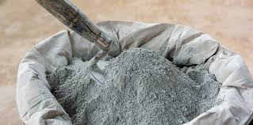
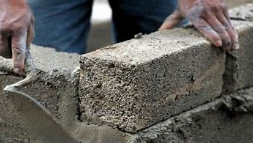
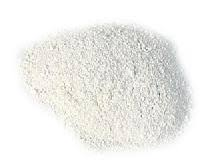
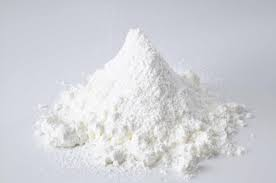

Types of Cement

Portland Cement
Portland cement is the most commonly used type of cement for general construction purposes.

Rapid Hardening Cement
Rapid hardening cement is designed to set and gain strength faster than ordinary Portland cement.

Sulphate Resisting Cement
Sulphate resisting cement is used in environments where sulphate attack is a concern.

White Cement
White cement is used for aesthetic purposes due to its bright color and high whiteness.